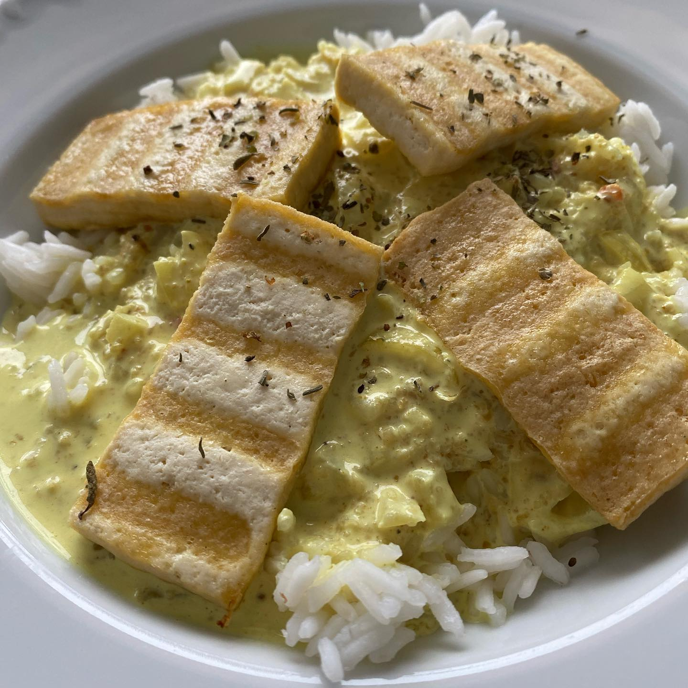

Cibuľová omáčka podľa @zelenacka_maminka — Normy Jedál
Cibulovo-kari omáčka s rýží a tofu- 18min.
Rýže
2 ks cibule
1 smetana
Kari, sůl, bobkový list
Tofu natural
Jogurt
Rýži uvaříme dle návodu. Mezitím na vodě ano vode. “Osmahneme” na drobno nakrájenou cibul, přidáme smetanu, kari, bobkový list a sůl. Nechám spojit chutě. Vytáhnu cca po 10min. Bobkový list, odstavíme. Primicham bílý jogurt. Tofu dáme do kontaktního grilu. Podáváme s rýží. U nás moc chutnalo.
Dobrou chuť 🍲
#kariomacka #cibulovaomacka #ryze #tofu #teplejidlo #obed #vecere #smetana #jogurt #bilyjogurt #sul #bobkovýlist #rychlovka #turborychlovka #dobrouchut